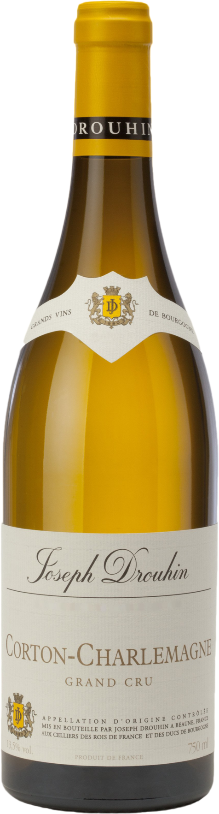
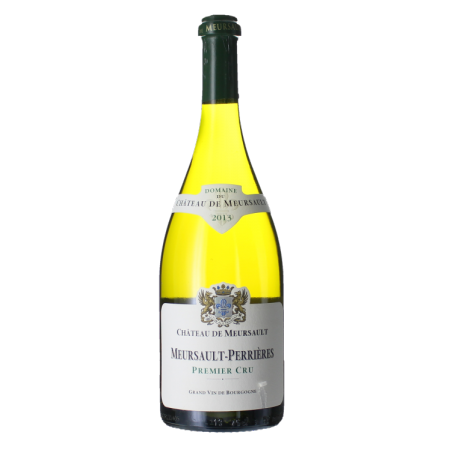

Avec sa magnifique robe jaune or et son nez aux arômes appétissants de mirabelle, de brioche et d’amande,
ce Meursault premier cru offre aussi une bouche ample, avec du gras et une belle persistance.

Corton-Charlemagne Grand Cru 2017 - Joseph Drouhin
ALOXE-CORTON Bouteille 75cl
Se déguste avec de la
252,03 €
La Grande Cuvée de l'Hortus en blanc s'offre encore à nous comme un véritable petit bijou du terroir.
Cet assemblage vinifié à majorité avec du Chardonnay élevé en fut de chêne, fait de ce vin un grand vin de garde aux arômes de toasts grillés,
de mandarine et d'abricot.

Meursault Perrieres - 1er Cru
BOURGOGNE - CHARDONNAY AOC Bouteille 75cl
84,90 €
Un très grand cru de Bourgogne, à déguster avec recueillement. La robe a des reflets d'or.
Le nez est soutenu, avec des tonalités subtiles de roses, d'amandes fraîches, d'agrumes et de miel, de bois rare et d'épices.